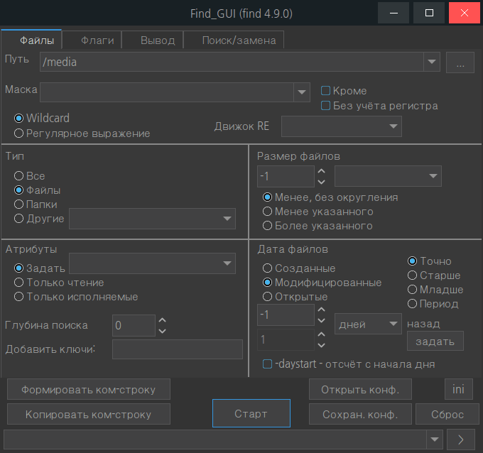
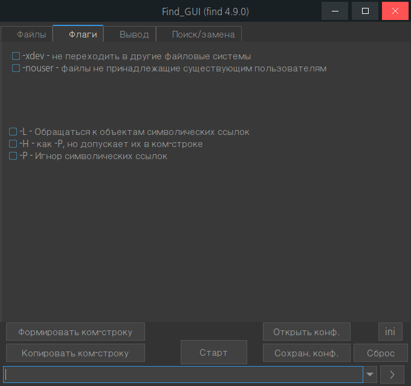
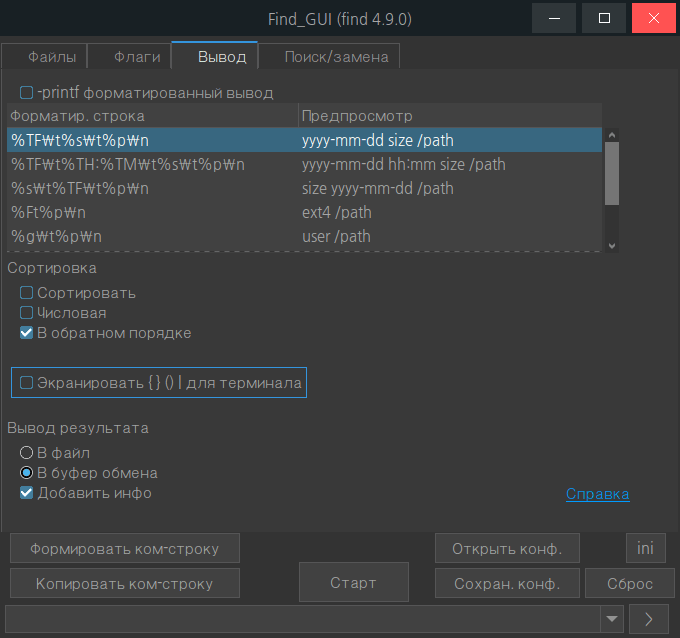
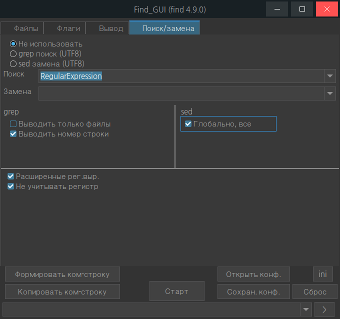

PureBasic
Find_GUI
Назначение
Оболочка для консольной программы find. Помогает в понятной форме сформировать командную строку без изучения ключей.




Маска определяет имя файла. Wildcard подразумевает подстановку частей текста метасимволами, например *, ?. Звёздочка означает набор символов любой длины, а вопрос "?" означает один символ. На данный момент используется с параметром -name, то есть маска распространяется только на имя файла. С параметром -path распространяется на весь путь, но пока это не встроено для выбора, так как редкий случай.
Регулярное выражение определяет шаблон для всего пути. Выбор движка регулярного выражения определяет немного различающийся набор метасимволов и возможно скорость. Использование рег.выр. требует знаний.
Если в полях задатчика размера и даты файлов установлен "-1", то этот критерий не используется в поиске.
Флаг -L может привести к очень долгому поиску файлов, так как переходит по символическим ссылкам, возможно захочется прибить процесс программы.
Этот критерий самый сложный для понимания. На вкладке "Вывод" надо включить вывод дат, чтобы проследить поведение задаваемых параметров.
"Точно" - если задано 10 дней назад, то файлы будут искаться отняв назад 10*24 и от этой границы поиск файлов за 24 назад. То есть если сегодня 12-е число месяца, то 10 дней назад не означает, что будут найдены файлы от 2-го числа. Если поиск был выполнен вечером, то почти все от 2-го, а если утром, то почти все от первого, если в середине для то половина от 2-го, половина от 1-го при условии равномерности создания файлов, точнее будут найдены файлы от средины 1-го числа до средины 2-го числа, но флагом "-daystart" можно отсечь условно "вчерашние", то есть отсчитывать только от начала дня, т.е. будут возвращены всегда за один день, но если искать утром то период от начала дня допустим 8 часов (надо проверить за 24 ли часа берётся, является ли это сдвигом). Если указать 0, то будут найдены за последние 24 часа.
"Старше" - если задано 10, то будут найдены все файлы, которые появились за последние 50 лет, кроме тех, что появились на последние 10 дней.
"Младше" - если задано 10, то будут найдены все файлы, созданные за последние 10 дней.
"Период" - здесь указываются две даты, например старше 5 дней и младше 10 дней. Программа не дает задать верхний предел меньше нижнего, так как получится взаимоисключающий диапазон. Даже если задать 5 и 6, то ничего найдено не будет никогда, надо как минимум задать 5 и 7, то есть с разницей не меньше 2-х. В режиме "минут" с разницей не меньше 1. Как доказательство можно настроить в минутах, потом перевести в дни и попытаться что-то найти.
Дни определяют шагами в 24 часа. Если надо точнее определить промежуток времени, то можно задать его в минутах (в десятках тысяч минутах), учитывая что в дне 60*24=1440 минут.
Кнопка "Задать" позволяет задать даты в стандартном формате (2021.03.06-8:30...2021.03.06-8:30), который преобразуется в минуты необходимые для программы. Так как минуты вычисляются от текущего времени, то сохранять эти данные бессмысленно. Сохраняется последняя заданная дата в поле ввода запроса даты, нужно просто повторно вычислить минуты.
Критерий "Созданные" означает момент когда файла не было и он появился. "Модифицированные", это когда произведена последняя запись в файл, кстати он может не измениться по содержанию, если от начала записаны те же данные, здесь важно само действие "запись в файл" при открытом дескрипторе файла. "Открытые" - это когда к файлу осуществлён доступ на чтение, то есть открыт его дескриптор, например открыт в редакторе без сохранения.
Вывод с помощью -printf позволяет вывести даты файлов, размеры, относительные пути, файловую систему, владельца. Например полезно если используется поиск по дате вывести даты файлов и сортировать в обратном порядке, что более информативно и исключает ошибку в указании дат.
Можно найти файлы по размеру, отсортировав в обратном порядке используя числовую сортировку, при этом размер должен стоять в первой колонке. Если не отметить "числовой", то сортировка происходит в лексикографическом порядке, то есть числа не важно какого они размера оценивается слева и в одном ряду будут 1, 10, 1000, 10000, потом 2, 20, 2000, 20000 и т.д.
В ini-файле находятся заготовленные строки -printf, которые выводятся в таблицу. То есть можно самому создать свои строки. Для примера разберём одну
%TF\t%TH:%TM\t%s\t%p\n\t - табуляция, чтобы представить данные в виде таблицы, выравнивая столбиками
Если ini-файл находится рядом с программой и имеет то же имя, то программа будет использовать его, это позволяет носить файл на флешке со своими настройками. Иначе используется в ~/.config/Find_GUI/Find_GUI.ini. А если его нет, то сгенерируется автоматически
Открыть ini-файл можно из окна программы, что удобно для добавления форматированных строк вывода
В основном ini-файл предназначен для сохранения последнего состояния флагов и раскрывающихся списков программы, то есть отдельные параметры для ручной правки, например "editor=" указывает с помощью какой программы открывать сгенерированный файл-список, если не указано, то открывает с помощью "xdg-open", который является скриптом определяющим ассоциации файлов.
Параметр comstr = bash -c "find %s 2>&1" задаёт командную строку. Возможно это в будущем пригодится. Здесь bash позволяет в формате строки терминала использовать другие утилиты, например xargs, sort и т.д. Код 2>&1 позволяет вывод потока возвращаемого в bash перенаправить в stdout, чтобы GUI мог прочитать и сохранить в файл или буфер обмена. Команда в bash передаётся в двойных кавычках, поэтому всякие скобки не воспринимаются как код bash. Внутри команде find передаваемые параметры заворачиваются в одинарные кавычки, например пути (с пробелами) и регулярные выражения. %s будет заменено сгенерированными в GUI параметрами.
Можно сохранить конфигурацию в новый ini-файл. Он не будет автоматически использоваться, но его можно открыть после запуска программы. В имени файла можно кратко описать назначение, например "Поиск больших файлов", "Поиск медиафайлов в загрузках", "Файлы за последнюю неделю". и т.д. При открытии файлов по умолчанию открывается окно где располагается ini-файл. Возможно есть смысл сохранять последнюю выбранную папку.
| Атрибуты | Владелец | Группа | Остальные |
|---|---|---|---|
| Чтение | 4 | 4 | 4 |
| Запись | 2 | 2 | 2 |
| Исполнение | 1 | 1 | 1 |
-perm u=rwx,g=rx,o=rxtИз примеров видно, что:
-perm u=rwx,g=rxs,o=rx
-perm u=rwx,g=rx,o=rx
-perm u=rw,g=r,o=r
-perm -u=r,g=r
-perm /u=r,g=r
Здесь почти всё понятно, но некоторые вещи требуют уточнения.
Используемые grep и sed работают только с UTF8 данными, это значит с файлами из Windows в кодировке cp1251 текст найден не будет.
В параметры добавляется -print0|xargs -0 это предназначено, чтобы правильно разделять пути. Если это не указать, то пути делятся на пробелы и переносы строк, то есть появляется проблема пробелов в именах файлов и папок. Параметр -print0 был специально предназначен для xargs -0, оба означают, что пути разделяются символом null, как передаваемые, формируемые командой find, так и xargs интерпретирует полученное с разделителем null.
Расширенные регулярные выражения - удобны тем, что не требуют экранирования метасимволов, то есть выглядят так, как это используется в блокнотах.
sed - Глобально все - заменить все вхождения, а не только первое попавшееся.
grep - Выводить только файлы - выводит в одном экземпляре, а вывод номеров строк подразумевает вид "файл:номер:строка" и выведет все вхождения.
Результаты поиска возможно отправить в файл или буфер обмена. Если файл невозможно создать (нет прав доступа, незаписываемое устройство), то результат будет отправлен в буфер обмена.
Имя файла задаётся следующим образом:
| f.txt | Если не указан путь, то сохранение в папке /tmp. Сохранение всегда в один и тот же файл. |
| f%n.txt | Тоже что предыдущее, но с индексом копии %n, то есть в папке /tmp создаётся новая копия файла с номером увеличивающимся на 1. |
| /home/user/f%n.txt | полный путь к файлу, с индексом копии %n. Если %n указан не в имени файла а в пути, то игнорируется, читается как есть. |
| /home/user/f.txt | полный путь к файлу, сохранение в тот же файл |
| /tmp/f/%n | пример самого короткого имени файла в отдельной папке временных файлов |
Поддерживается 2 параметра ком-строки, папка и ini-файл. Причём если два параметра, то первым должен быть папка, а второй конфиг, а если один параметр, то автоматически определяется файл или папка и соответственно правильно используется.
Путь к папке будет вставлен в поле поиска папки
Путь к конфигу использует соответствующие настройки
Это позволяет добавить пункт поиска в контекстное меню файлового менеджера. А использование конфига позволяет например в медиаплеере вызвать Find_GUI с настройками для поиска медиафайлов, если медиаплеер позволяет настраивать своё контекстное меню.
Возможен конфуз, если файловый менеджер не определяет к какому объекту используется контекстное меню и если вызвать контекстное меню к ini-файлу, то он воспримет его как конфиг. В Nemo этой проблемы нет, так как параметр Mimetypes=inode/directory; позволяет показать пункт только для папок.